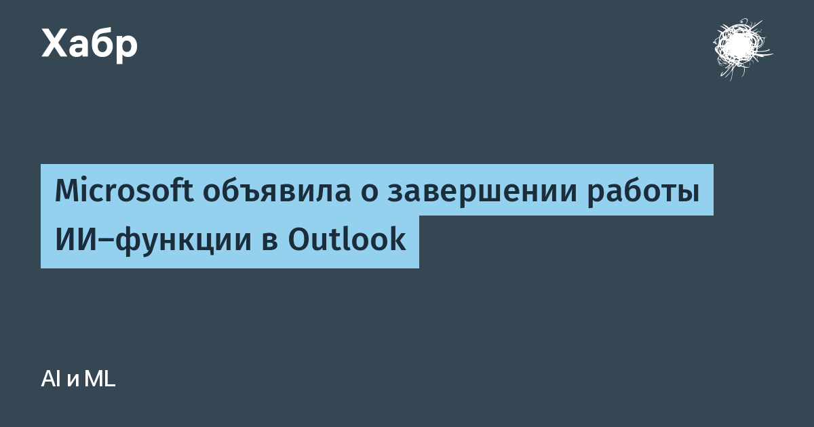

Microsoft объявила в сервисном уведомлении (MC1519861), что функция «Приоритизация входящих» (Prioritize My Inbox) будет удалена из всех версий Outlook — десктопной, веб- и мобильной. Начало поэтапного сворачивания — 26 октября, полное исчезновение — к концу марта 2027 года. Формальная причина — «мероприятия по оптимизации».
Функцию представили в прошлом году: Copilot анализировал стиль работы пользователя и на основе его прошлых действий подсвечивал самые важные письма, поддерживая персональные подсказки вида «показывай только письма от руководства». Microsoft тогда обещала «личного ассистента», который избавляет от стресса при виде тысяч непрочитанных писем. Оказалось, что ассистент работает заметно хуже, чем продавали: за две недели до этого Microsoft закрыла ещё одну Copilot-функцию Outlook, и теперь ИИ-надстройка в почте тает с обеих сторон.
Никуда не денутся классический Focused Inbox («Важные/Другое»), обычные правила фильтрации и флажки — при этом правила теперь можно составлять с помощью самого Copilot. То есть ИИ из Outlook не исчезает полностью: остаются суммаризация писем и помощь в написании. Под нож именно автономная сортировка — та часть, где модель решала за человека, что важно.
Показательный эпизод для всей индустрии: вендор дважды за две недели убирает флагманские ИИ-функции из продукта, который есть у сотен миллионов людей. Автономная приоритизация почты — как раз тот случай, где ошибка модели стоит пропущенного важного письма, а доверие к «умной» кнопке после этого не восстанавливается. Пока лабораторные агентные рантаймы учатся изоляции (OpenAI на этой неделе подробно описала, как её обучаемые агенты ломали собственные песочницы через sidescan-атаки на процессор), крупные софтверные компании pragmaticly сокращают ИИ-автономию в ежедневных инструментах. Каждый сам решает, что честнее — признать недоделку или дорабатывать её в проде.